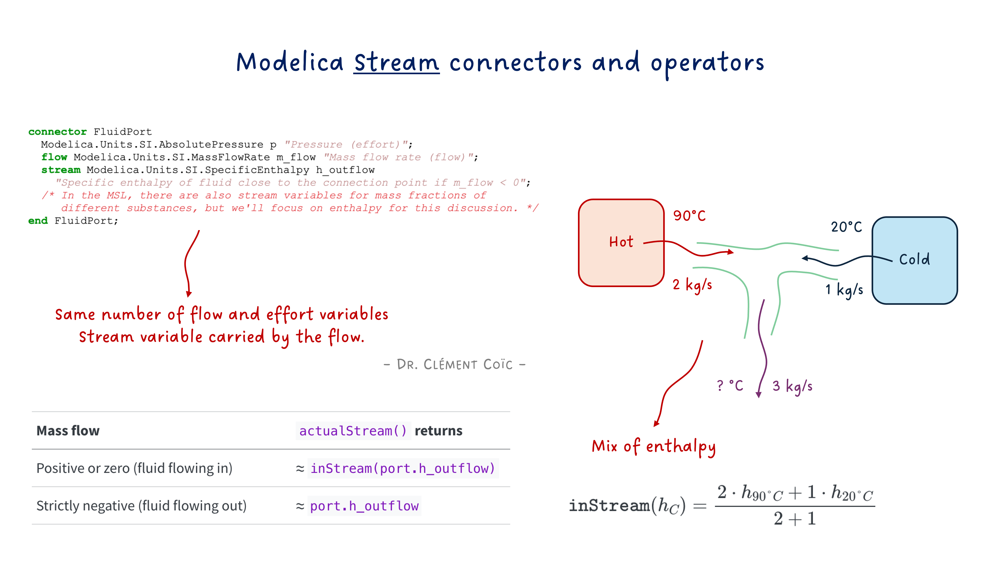
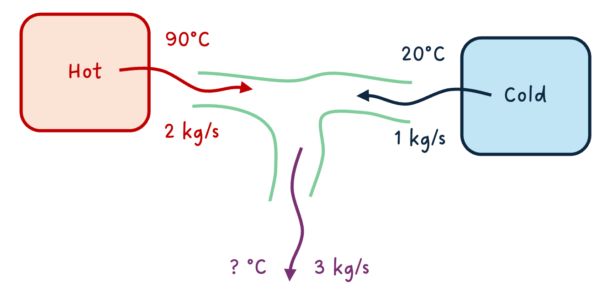
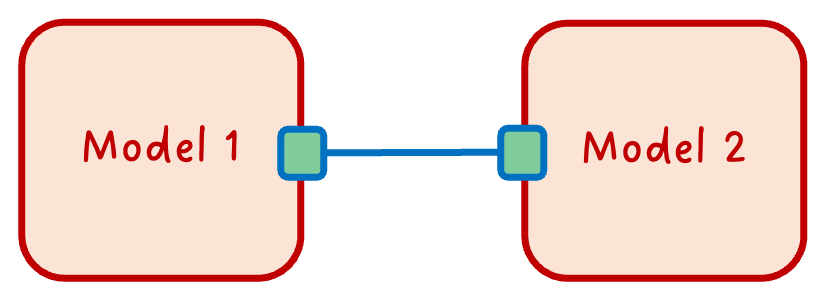
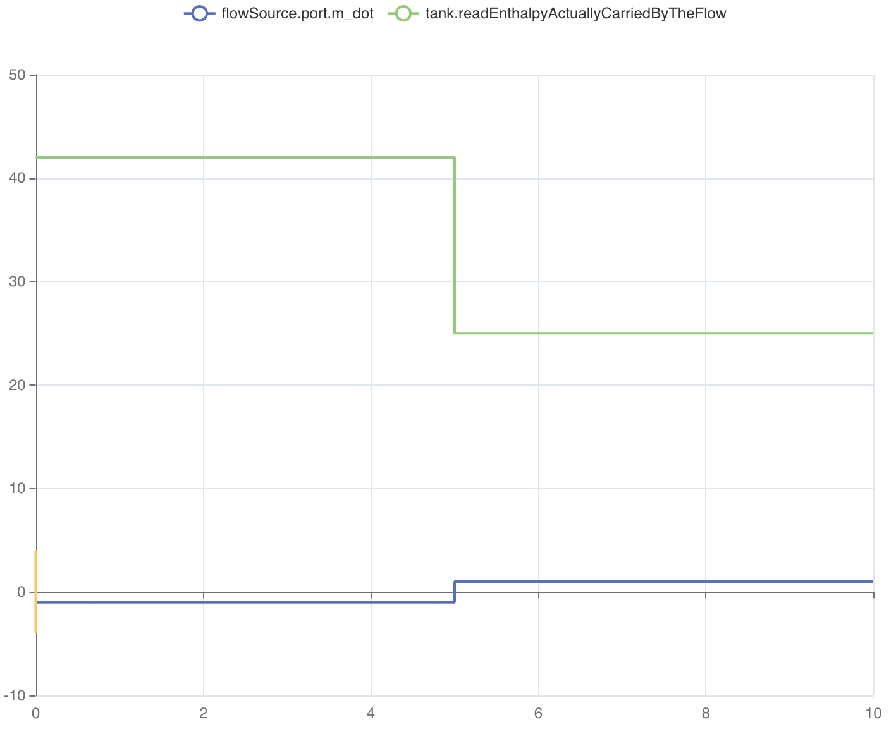

Stream Connectors — What Flows Inside Your Pipes

I hope you’ve got your preferred drink in hand ☕️🫖💧
Remember the teaser from last time? We peeked inside connectors, found effort and flow variables, and I casually mentioned a stream keyword lurking in Modelica.Fluid. Time to deliver on that promise.
Here’s a thought experiment: imagine hot water at 90°C flowing into a T-junction from the left, and cold water at 20°C flowing in from the right. They mix and flow out the bottom. Simple enough, right?
Now here’s the problem: which temperature does the downstream pipe “see”? It depends on which way the fluid is flowing. And that can change during the simulation. 😅
Effort + flow got us far. But for thermo-fluids, we need one more trick. Let’s dig into it!
The problem with regular connectors
Let’s go back to what we learned last time. A well-formed physical connector has effort and flow variables. For fluids, that would be:
connector FluidPort_simple
Modelica.Units.SI.AbsolutePressure p "Pressure (effort)";
flow Modelica.Units.SI.MassFlowRate m_flow "Mass flow rate (flow)";
end FluidPort_simple;Pressure equalizes at the connection point. Mass flow sums to zero. Conservation of mass: ✅. This is exactly the fluid row from our effort/flow table in article 20.
Now let’s try to model our T-junction with this connector. Hot water comes in from the left (90°C), cold water comes in from the right (20°C), and mixed water flows out the bottom.

Here’s the question: what is the temperature of the mixed water? Intuitively, it depends on how much hot vs. cold water is flowing in. If the hot side has a mass flow of 2 kg/s and the cold side has 1 kg/s, the mix will be closer to 90°C than to 20°C.
But our connector only carries pressure and mass flow. There’s no temperature information in the connection. We literally have no way to compute the output temperature. 😮
“But wait,” you might say, “can’t we just add temperature to the connector? Like our thermal HeatPort?”
We could try:
connector FluidPort_attempt
Modelica.Units.SI.AbsolutePressure p "Pressure";
flow Modelica.Units.SI.MassFlowRate m_flow "Mass flow rate";
Modelica.Units.SI.Temperature T "Temperature... but whose?";
end FluidPort_attempt;But think about what connect() would do with T: it would generate T_a = T_b = T_c, making all temperatures equal. That’s the effort variable rule! The hot water, the cold water, and the mix would all be forced to the same temperature at the junction point. That’s obviously wrong — 90°C ≠ 20°C. 🤦
And if we tried making T a flow variable? Then temperatures would sum to zero. That’s even more nonsensical. Temperature is not a conserved quantity.
Note that both of these attempts make the connector unbalanced - as we discussed last time, a connector must have an equal number of effort and flow variables. Adding a third variable without the right keyword breaks that balance and leads to incorrect equations.
The truth is, T is neither an effort nor a flow. It’s something else entirely: an intensive property that travels with the fluid. Its value at the junction depends on which direction the mass is flowing. And that direction can change during the simulation.
This is the fundamental problem that the stream keyword solves.
Enter stream
Modelica’s answer to this problem is elegant: a third type of variable, declared with the stream keyword. It’s specifically designed for intensive properties that are transported by fluid flow.
Let’s have a quick view at what the Modelica.Fluid connector looks like:
connector FluidPort
Modelica.Units.SI.AbsolutePressure p "Pressure (effort)";
flow Modelica.Units.SI.MassFlowRate m_flow "Mass flow rate (flow)";
stream Modelica.Units.SI.SpecificEnthalpy h_outflow
"Specific enthalpy of fluid close to the connection point if m_flow < 0";
/* In the MSL, there are also stream variables for mass fractions of different substances, but we'll focus on enthalpy for this discussion. */
end FluidPort;See that stream keyword in front of h_outflow? That’s the magic ingredient we were missing. 🪄
Let’s unpack what’s going on:
pis the effort variable → equalizes at the connection point (same pressure)m_flowis the flow variable → sums to zero at the connection point (conservation of mass)h_outflowis the stream variable → carries the specific enthalpy of the fluid leaving this component
Remember the sign convention discussed in our previous article about connectors? Positive when entering the component.
That last point is crucial. Read the documentation string again: “if m_flow < 0”. This means that each component says: “If fluid flows out of me through this port, here’s the enthalpy of that fluid.” It’s a conditional declaration — the value is only meaningful when the fluid actually flows outward. Else it doesn’t play a role.
Why
h_outflowand not justh? Because the name reminds you of the convention: this is the enthalpy of the outflowing fluid from this component’s perspective. Each side of a connection declares what it would send out. The system then figures out which side is actually sending and which is receiving.
Think of it like a restaurant kitchen with two doors. 🚪🚪 Each door has a sign that says “If I’m the exit, the food coming through me is a dessert, else a main course.” The system then looks at which way people are actually walking to determine what food gets delivered where.
Back to our T-junction. With stream connectors, each of the three pipes declares its outflow enthalpy:
- Left pipe: “If fluid flows out of me, it has enthalpy corresponding to 90°C”
- Right pipe: “If fluid flows out of me, it has enthalpy corresponding to 20°C”
- Bottom pipe: “If fluid flows out of me, it has the mixed enthalpy”
Now the system has all the information it needs! But how does a component on the receiving end figure out what enthalpy is actually coming in? That’s where inStream() comes in.
inStream() — Asking the upstream question
So each component declares the enthalpy of its outflowing fluid via h_outflow. Great. But inside a component, what you usually need to know is: “What enthalpy is coming IN to me?”
That’s exactly what inStream() does. It’s a built-in operator that answers the question: “If fluid is flowing into my port right now, what is the value of the stream variable that’s being carried in?”
Here’s how you use it inside a component:
model SimplePipe
FluidPort port_a;
FluidPort port_b;
equation
// Mass balance
port_a.m_flow + port_b.m_flow = 0;
// Pressure drop (simplified)
port_a.p - port_b.p = some_loss;
// Enthalpy: what I send out is what came in from the other side
port_a.h_outflow = inStream(port_b.h_outflow);
port_b.h_outflow = inStream(port_a.h_outflow);
end SimplePipe;Look at those last two lines. They say:
- “The enthalpy I would send out of
port_ais whatever is streaming in throughport_b” - “The enthalpy I would send out of
port_bis whatever is streaming in throughport_a”
In other words: a simple pipe just passes the enthalpy through. No mixing, no transformation. Whatever comes in one end goes out the other. Makes sense! 🙂
The two-component case
We have just seen what happens inside a component. But what about the connection itself? What equations does connect() generate for stream variables? Let’s start simple. Two components connected:

When Modelica sees connect(A.port, B.port), it generates:
// Effort equality (as always)
A.port.p = B.port.p;
// Flow conservation (as always)
A.port.m_flow + B.port.m_flow = 0;
// Stream variable magic ✨
// inStream(A.port.h_outflow) = B.port.h_outflow
// inStream(B.port.h_outflow) = A.port.h_outflowFor two components, inStream() is straightforward: the incoming stream value is simply the outflow value from the other side of the connection. If A sends out 90°C-equivalent enthalpy, then B receives 90°C-equivalent enthalpy. No surprises.
The three-component case (our T-junction!)
Now it gets interesting. Three components connected at a single point. That’s our T-junction!
What does inStream(C.port.h_outflow) return? C wants to know: “What enthalpy is flowing into me?”
The answer: a mass-flow-weighted average of the outflow enthalpies from all other connected ports that are actually sending fluid toward C.
Mathematically, for a connection set with \(n\) connectors, inStream() for connector \(i\) is defined as:
\[\texttt{inStream}(h_i) = \frac{\sum_{j \neq i} \max(-\dot{m}_j, 0) \cdot h_j}{\sum_{j \neq i} \max(-\dot{m}_j, 0)}\]
Where \(\dot{m}_j\) is the mass flow rate and \(h_j\) is h_outflow of connector \(j\). The \(\max(-\dot{m}_j, 0)\) picks out only the connectors that have fluid flowing out (into the connection point), and weights their enthalpy by how much mass they contribute.
Again, the minus sign is because of the convention: positive mass flow means fluid is entering the component, so the flow leaving the component has a negative sign - we need to take its negative to get the correct contribution.
In our T-junction, if A sends 2 kg/s of 90°C fluid and B sends 1 kg/s of 20°C fluid (both flowing into the junction), then what C sees is:
\[\texttt{inStream}(h_C) = \frac{2 \cdot h_{90°C} + 1 \cdot h_{20°C}}{2 + 1}\]
A mass-flow-weighted mix. Exactly what physics tells us should happen! 🎉
⚠️ Important:
inStream()is not a function you implement — it’s a built-in language operator. The Modelica compiler generates the appropriate equations based on the connection topology. You just call it and trust the compiler to do the right thing. That’s the acausal magic at work.
But there are cases where you actually need to know the actual enthalpy at a port, regardless of flow direction. For that, there’s another operator: actualStream().
actualStream() — What you write in your models
So inStream() gives you the enthalpy of fluid coming into your port. But here’s the thing: inside a component, you often need to compute energy balances. And for that, you need to know: “What is the actual enthalpy of the fluid passing through this port, regardless of flow direction?”
If fluid flows in, you want inStream(port.h_outflow) — the enthalpy carried by the incoming fluid. If fluid flows out, you want port.h_outflow — the enthalpy your component is sending out.
You could write this yourself with an if:
h_actual = if port.m_flow >= 0 then inStream(port.h_outflow) else port.h_outflow;That’s exactly what actualStream() does for you. It handles the logic of checking the flow direction and returning the correct value. So you can simply write:
h_actual = actualStream(port.h_outflow);| Mass flow | actualStream() returns |
|---|---|
| Positive or zero (fluid flowing in) | ≈ inStream(port.h_outflow) |
| Strictly negative (fluid flowing out) | ≈ port.h_outflow |
Conceptually, actualStream() behaves like this:

This image is a screenshot from my lesson on Michael Tiller’s Modelica playground app. Play with it yourself: here
But there’s a nasty problem lurking here. What happens at exactly m_flow = 0? The if creates a sharp discontinuity — a sudden jump between two values. Numerical solvers hate this. 😤 It can create chattering, convergence issues, and sometimes outright simulation failures.
So most of the time, actualStream() isn’t used alone. It’s used in energy balance equations - port.m_dot * actualStream(port.h_outflow) - where the product of the mass flow and enthalpy mix naturally goes to zero as flow goes to zero, smoothing out the transition. So the product is smooth and continuous! (This is explained here in the Modelica specification.)
This is really clever: near zero flow, this product smoothly blends between the inflow and outflow values using a regularization. No sharp jumps. No solver tantrums.
When to use which?
Here’s a simple rule of thumb:
inStream(): Use when you’re definingh_outflowequations. “What’s coming in from the other side?” → used to compute what you send out. That’s what we did in theSimplePipeexample.actualStream(): Use when you need the actual enthalpy at a port for energy balance calculations. “What’s the enthalpy of the fluid actually passing through here?”
And the good thing is that you might not need to think about this too much. If you’re using Modelica.Fluid components, they already use these operators correctly under the hood. You just connect them and let the magic happen. But if you’re building your own custom fluid models, now you know how to handle the enthalpy transport properly.
The END for today
Enough for today. stream, inStream(), actualStream() — you now speak fluid connector. 🌊 I wanted to do more on this topic, like showing how to implement a T-junction component yourself using these concepts, but I think this is already a lot to digest. We can always come back to it in a future article if there’s interest.
Next time: initialization. Or as I like to call it, “why does my model fail at t=0?” Stay tuned.
Break is over, go back to what you were doing.
Clem
© 2025-2026 Clément Coïc — Licensed under creative commons 4.0. Non-commercial use only.